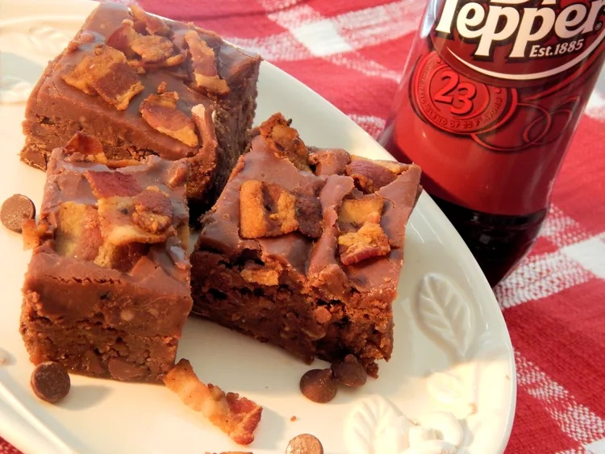

Dr. Pepper Bacon Brownies

Description
This recipe was posted to Allrecipes by user Gavin Logan Suazo, and its two eponymous ingredients immediately caught my eye.
He describes it as a crowd-pleaser, and if the crowd consists wholly of myself, I think there's no question whether it'll be pleased. Though I've modified the recipe to use my favorite specific type of Dr. Pepper.
Ingredients
- Cooking spray
- 1 (12 fl oz) can Dr. Pepper & Cream Soda Zero Sugar
- 1 cup butter
- 12 strips bacon, chopped
- 2 cups all-purpose flour
- 2 cups white sugar
- ¼ cup unsweetened cocoa powder
- 1 teaspoon ground cinnamon (Optional, but I love me some cinnamon, so I'll make sure to use it)
- 1 teaspoon salt
- ½ cup buttermilk
- 2 teaspoons vanilla extract
- 1 teaspoon baking soda
- 1 (12 ounce) bag milk chocolate chips
Separate Ingredients for Frosting
- ½ cup butter
- 3 tablespoons unsweetened cocoa powder
- 1 (16 ounce) package confectioners' sugar
Steps
- Preheat oven to 350° F (175° C). Grease 12x18-inch pan with cooking spray.
- Combine 1 cup Dr. Pepper & Cream Soda Zero Sugar and 1 cup butter in saucepan over medium-low heat. Heat until butter is melted, 3 to 5 minutes. Remove from heat and let cool.
- Place bacon in large skillet and cook over medium-high heat, turning occasionally, until evenly browned, about 8 minutes. Drain on paper towels.
- Mix flour, white sugar, ¼ cup cocoa powder, cinnamon, and salt together in large bowl.
- Whisk buttermilk, vanilla extract, and baking soda together in small bowl. Pour flour mixture and mix until batter is blended. Add butter mixture, ⅓ of the bacon, and chocolate chips, then mix thoroughly. Spread in prepared pan.
- Bake in preheated oven until top is dry and edges have started to pull away from sides of pan, 25 to 30 minutes.
- Combine 6 tablespoons Dr. Pepper & Cream Soda Zero Sugar, ½ cup butter, and 3 tablespoons cocoa powder in saucepan and bring to boil. Remove from heat. Add ½ of remaining bacon and confectioners' sugar and whisk until frosting is smooth.
- Spread frosting over brownies. Garnish with remaining bacon. Cool until frosting sets, about 20 minutes. Cut into squares.